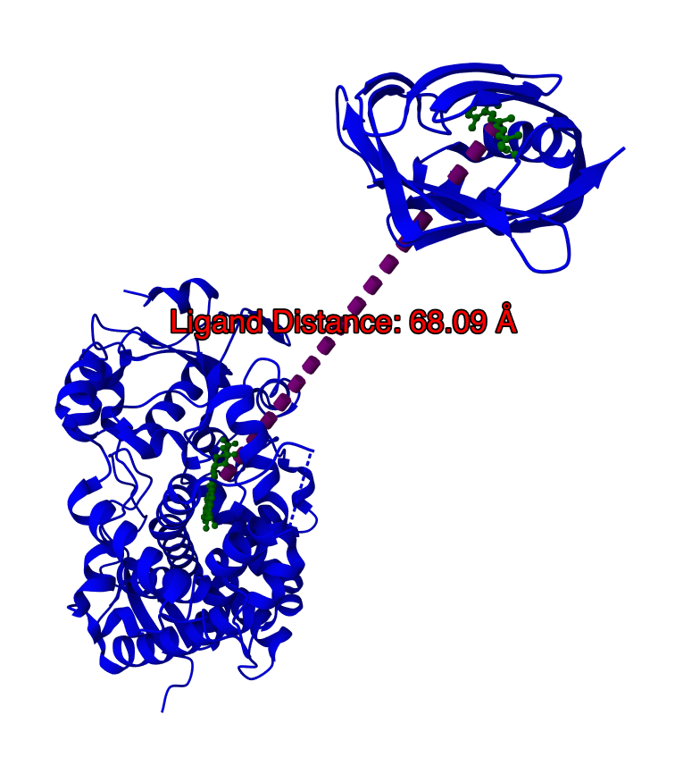

MolViewSpec primitives
MolViewSpec supports geometric primitives such as circles, arrows, tubes etc. These can be freely added to scenes as needed and provide a powerful tool to add custom annotations. Primitives usually require that one or more positions are defined, which can be done by providing 3D vectors or by leveraging Selectors. Selectors can reference the position of specific atoms or residues without requiring you to manually obtain their 3D coordinates.
Custom visuals using 3D vectors
Acquire a builder instance as usual. Call .primitives to enter the primitives mode and start defining one or more
geometric shapes. You can customize the visuals of all primitives at this stage as well and make e.g. everything
semi-transparent.
builder = create_builder()
builder.primitives(opacity=0.66)
A range of functions are available to define:
mesh | lines | tube | arrow | distance | angle | label | ellipse | ellipsoid | sphere | box.
Most of them expect positions to be provided to define start and end point or the direction/orientation of a shape. Each shape can be further customized using representation-specific parameters.
.arrow(
start=(1, 1, 1),
direction=(0, 2.2, 0),
tube_radius=0.05,
show_end_cap=True,
color="#ff00ff",
tooltip="Y",
)
Combining primitives with ComponentExpression selections
Selectors are compatible with this part of the API, allowing you to reference the spatial coordinates of parts of a structure without the need of obtaining their 3D positional data explicitly.
The following example showcases how a ComponentExpression is used to defined start and end point of a distance
measurement that will add a dashed length between both referenced residues and label it with the computed distance
between the two residues.
builder = create_builder()
structure = builder.download(url=_url_for_mmcif("1tqn")).parse(format="mmcif").model_structure()
(structure.component(selector="polymer").representation().color(color="blue"))
(
structure.component(selector=[ComponentExpression(auth_seq_id=258), ComponentExpression(auth_seq_id=508)])
.representation(type="ball_and_stick")
.color(color="green")
)
The following snippet creates primitives in the context of this structure.
structure.primitives()
.distance(
start=ComponentExpression(auth_seq_id=258),
end=ComponentExpression(auth_seq_id=508),
color="red",
radius=0.1,
dash_length=0.1,
label_template="Distance: {{distance}}",
label_color="red",
)
Using references
More complex cases will involve multiple structures. ComponentExpression can be tied to specific structures using
explicit references. This allows e.g. to distance measurements between two distinct structures.
This example loads two structures: 1tqn and 1cbs. Note the .model_structure(ref="X") invocations that assign a
user-defined reference to each structures. This allows pointing to these structures as X and Y when defining
primitives using Selectors.
builder = create_builder()
_1tqn = builder.download(url=_url_for_mmcif("1tqn")).parse(format="mmcif").model_structure(ref="X")
_1tqn.component(selector="polymer").representation().color(color="blue")
(
_1tqn.component(selector=ComponentExpression(auth_seq_id=508))
.representation(type="ball_and_stick")
.color(color="green")
)
_1cbs = builder.download(url=_url_for_mmcif("1cbs")).parse(format="mmcif").model_structure(ref="Y")
_1cbs.component(selector="polymer").representation().color(color="blue")
(
_1cbs.component(selector=ComponentExpression(auth_seq_id=200))
.representation(type="ball_and_stick")
.color(color="green")
)
Now, individual sequence positions can be used as value for the start and end position of this distance measurement despite them coming from separate structures.
(
builder.primitives().distance(
start=PrimitiveComponentExpressions(structure_ref="X", expressions=[ComponentExpression(auth_seq_id=508)]),
end=PrimitiveComponentExpressions(structure_ref="Y", expressions=[ComponentExpression(auth_seq_id=200)]),
color="purple",
radius=1,
dash_length=1,
label_template="Ligand Distance: {{distance}}",
label_color="red",
)
)
